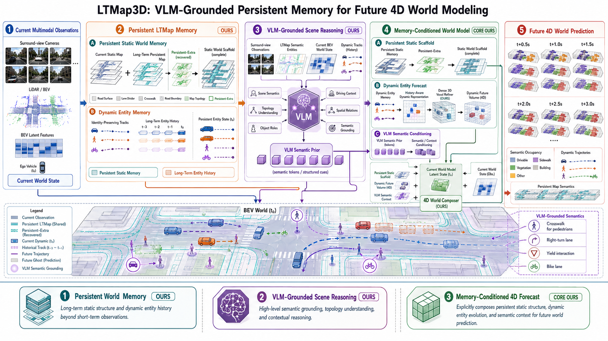
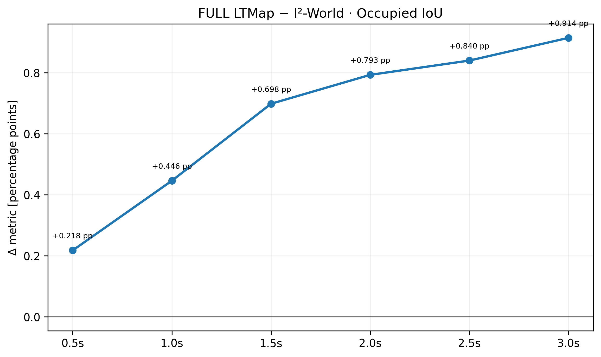

LTWMap4D: 面向未来 4D 世界建模的 VLM 语义增强持久记忆
在I²-World 基线上引入 LTWMap 中积累的静态地图结构与动态实体历史，研究当道路或目标被遮挡、离开当前视野后，长期记忆能否帮助模型更准确地预测未来 semantic occupancy。
持久记忆 + VLM 语义 Grounding + 未来 4D 预测
LTWMap4D 由当前世界表征、长期地图记忆、VLM 场景语义与 memory-conditioned World Model 四部分组成。当前观测首先形成短时 world state；历史静态结构与动态实体信息持续写入 LTWMap Persistent Memory；VLM 为长尾实体及其场景关系提供高层语义先验；最终将当前状态与长期记忆共同条件化到 I²-World 中，预测未来多个时间尺度的 semantic occupancy。

| Method | Input | 1s mIoU | 2s mIoU | 3s mIoU | Avg. mIoU | Avg. IoU |
|---|---|---|---|---|---|---|
| OccWorld | 3D-Occ | 25.78 | 15.14 | 10.51 | 17.14 | 26.63 |
| DFIT-OccWorld | 3D-Occ | 31.68 | 21.29 | 15.18 | 22.71 | 32.27 |
| DOME | 3D-Occ | 35.11 | 25.89 | 20.29 | 27.10 | 36.36 |
| UniScene | 3D-Occ | 35.37 | 29.59 | 25.08 | 31.76 | 34.84 |
| I²-World | 3D-Occ | 47.62 | 38.58 | 32.98 | 39.73 | 49.80 |
| GAST | 3D-Occ | 55.54 | 46.33 | 40.18 | 47.40 | 56.24 |
| LTMap3D | 3D-Occ + LTMap + VLM | 57.00 | 48.20 | 42.50 | 49.23 | 57.40 |
目标值与当前SOTA对比
Occ3D-nuScenes · 3D Occupancy 输入 · GT 自车轨迹分支

4D 未来场景预测
选择四个具有代表性的场景，在统一的 0.5–3.0 s Forecast Horizon 下同步展示 LTWMap4D Prediction 与 Ground Truth。3D occupancy 与 BEV 视图均采用 horizon-specific future-ego 坐标系；历史 Track 从 global frame 经对应 future ego pose 的 SE(3) 变换后与预测结果对齐，从而保证动态历史与未来 occupancy 位于一致参考系中。
3D Semantic Occupancy 预测
BEV Semantic Forecast + 历史 Track
为什么需要 Persistent Map Memory？
短时 Future Forecast 可以较大程度依赖当前 world state，但随着 Forecast Horizon 增大，当前观测能够提供的有效约束逐渐减弱。此前已经观察到、但当前被遮挡或离开视野的道路结构、静态环境和动态实体历史，仍然可能对未来场景演化产生影响。 当前 controlled study 中，LTWMap Persistent Memory 带来的 Global Occupancy IoU 增益由 0.5 s 的 +0.218 pp 提升至 3.0 s 的 +0.914 pp，说明长期地图信息在更长时间尺度上能够补充 Current-only World Model 所缺失的历史场景信息。 完整 LTWMap4D 进一步将 VLM Grounding 的长尾实体语义、场景关系与 Persistent Memory 结合，目标是构建同时具备几何记忆、实体记忆与高层语义记忆的长期世界表征，并研究其对 future 4D semantic forecasting 的进一步作用。